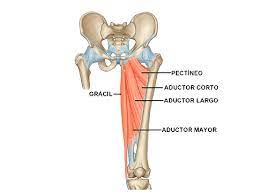

Índice de contenidos
- 1. Miología
- 1.1. Clasificiación de los músculos
- 1.2. Tendones
- 1.3. Anexos de los músculos
- 1.4. Estímulos
- 1.5. Calambres
- 1.6. Reflejos
- 1.7. Propiedades del músculo
- 1.8. Tono muscular
- 2. Cadera y extremidades inferiores
- 2.1. Glúteos
- 2.2. Muslos
- 2.2.1. Muslo región anterior
- 2.2.2. Muslo región interna
- 2.2.3. Muslo región posterior
- 2.3. Piernas
- 2.3.1. Piernas región anterior
- 2.3.2. Piernas región externa
- 2.3.3. Piernas región posterior
MIOLOGÍA
Los músculos se clasifican de la siguiente manera:
- Músculo liso: sus células no presentan estriaciones transversales.
- Músculo estriado: sus células presentan estrías transversales en el microscopio. A su vez se subdivide según su localización:
- Músculo esquelético: está unido al hueso y es responsable de los movimientos de los esqueletos axial y periférico.
- Músculo estriado visceral: es idéntico al musculo esquelético, pero solo se encuentra en los tejidos blandos, tales como la lengua, la faringe, el diafragma y la parte superior del esófago.
- Músculo cardíaco: es, obviamente, el corazón.
CLASIFICACIONES DE LOS MÚSCULOS
De acuerdo a la forma
La forma de los músculos es variable, tienen forma de cinta, o son triangulares, rectangulares, trapezoides, circulares, etc.
De acuerdo a las dimensiones
- Músculos largos: predominan el largo sobre le ancho y el espesor. (Ej. Bíceps, Tríceps, etc.)
- Músculos anchos: predomina el ancho sobre el largo y sobre el espesor. (Ej. El diafragma)
- Músculos cortos: las tres dimensiones son más o menos iguales (Orbicular de los labios)
De acuerdo a la función
- Músculos extensores: tríceps braquial
- Músculos flexores: bíceps braquial
- Músculos pronadores: pronador redondo del antebrazo
- Músculos supinadores: supinador largo del antebrazo
- Músculos masticadores: masetero
- Músculos de la expresión, mímica o fisonómicos: frontal
- Músculos respiratorios: diafragma
- Músculos antagónicos: cuando uno de ellos realiza un movimiento en determinado sentido y el otro en sentido opuesto (por Ej. El bíceps al contraerse, levanta el antebrazo sobre el brazo y el tríceps, su antagonista hace lo contrario).
- Músculos congéneres: cuando realizan el mismo movimiento (los músculos intercostales externos y los escalenos, levantan las costillas durante el proceso de la inspiración).
TENDONES
Son formaciones de coloración blanquecina de tejido conectivo denso modelado, resistente e inextensible. Presenta varias formas, aunque la más común
es la cilíndrica o aplanada. Es la parte fibrosa del musculo que le sirve para fijarse al hueso.
ANEXOS DE LOS MÚSCULOS
Son formaciones que acompañan a los músculos, permitiendo o facilitando su actividad, estos son:
Aponeurosis o fascias
Son membranas blanquecinas, a veces de aspecto nacarado, que envuelven a los músculos y evitan su desplazamiento lateral cuando se contraen. Siempre están dotadas de gran resistencia
Vainas fibrosas
Son arcos fibrosos que se fijan por los extremos en los huesos, formando como anillos dentro de los cuales se deslizan los tendones.
ESTÍMULOS
Estímulo es todo elemento capaz de provocar una reacción muscular.
Pueden ser mecánicos (pinchazos, golpes, pellizcos), químicos (ácidos y sales), térmicos (frío, calor), eléctricos (electricidad).
CALAMBRES
El calambre es una contracción masiva del músculo, involuntaria y muy dolorosa. Las causas pueden ser de origen variado. Mala circulación, Edema crónico de miembros inferiores, acumulación de ácido láctico entre otras causas posibles.
REFLEJOS
Reflejo miotático
Es un reflejo de defensa que se desencadena cuando un músculo es sometido a un estiramiento intenso. La respuesta al reflejo miotático es la contracción muscular como defensa para evitar el desgarro.
Reflejo miotático inverso
Es un reflejo de defensa que se desencadena cuando un músculo es sometido a una contracción intensa. La respuesta es la relajación muscular como defensa para evitar el desgarro.
PROPIEDADES DEL MÚSCULO
La contractibilidad
Que le permite disminuir su longitud sin modificar su volumen. Todo músculo que se contrae, modifica su forma, acortando su longitud y aumentando su ancho y espesor; pero no cambia su volumen.
La elasticidad
Es la capacidad de recuperar su forma y tamaño primitivo, después de contraerse o extenderse.
La extensibilidad
Por la que un músculo se alarga bajo la acción del estímulo, es decir, se estira (la vejiga urinaria cuando contiene orina en exceso)
TONO MUSCULAR
Es el estado de semicontracción permanente. Cuando una persona está consciente, sus músculos se encuentran en un estado de semicontracción, denominado tono muscular. Esta propiedad es la que permite, por ejemplo, la postura erecta del cuerpo.
CADERA Y EXTREMIDADES INFERIORES
Son nueve, pero veremos solamente los GLÚTEOS por ser los más voluminosos y superficiales. Los otros 6 músculos sólo serán nombrados:
- Piramidal
- Gémino superior
- Gémino inferior
- Obturador interno
- Obturador externo
- Cuadrado crural
GLÚTEOS
Todos se insertan en la CRESTA ILÍACA y en la FOSA ILIACA EXTERNA desde donde se dirigen al TROCANTE MAYOR del FÉMUR. El GLÚTEO MAYOR también se inserta
en el SACRO y en el CÓCCIX.
MUSLO REGIÓN ANTERIOR
Sartorio
Cruza diagonalmente la cara anterior del muslo. Va desde el HUESO ILIACO a la TUBEROSIDAD INTERNA DE LA TIBIA. Cuando se contrae, dobla o flexiona
el muslo, llevándolo hacia fuera, y flexiona la pierna, llevándola hacia adentro. Es el movimiento de colocar la pierna de un miembro inferior, sobre el muslo del otro, posición característica de los sastres.
Cuadriceps crural
Formado por cuatro porciones, ocupa la región anterior del muslo. Desde el HUESO ILIACO y el FÉMUR a la ROTULA y la TIBIA. Es EXTENSOR de la
rodilla y FLEXOR de la cadera. Sus cuatro porciones son: vasto interno (origen, cara antero-interna del fémur), crural intermedio (origen, cara anterior del fémur), vasto externo (origen, cara antero-externa del fémur), recto anterior
(origen EIAI, espina iliaca antero inferior, del hueso coxal).
MUSLO REGIÓN INTERNA
Aductores

Están dispuestos en forma de abanico desde el HUESO COXAL o ILIACO a la parte interior del fémur y son tres: aductor mayor, aductor mediano y
aductor menor. Son aductores del muslo.
MUSLO REGIÓN POSTERIOR
Bíceps crural
Formado por dos porciones, en la región posterior del muslo. Se origina en el ISQUION y el FÉMUR para insertarse en la TIBIA y la segunda porción se origina en el femur para insertarse en la cabeza del PERONE. Es flexor de rodilla y extensor de cadera.
Semitendinoso
Se origina en el ISQUION para insertarse en la TIBIA. Es Flexor de rodilla y extensor de cadera.
Semimembranoso
Se origina en el ISQUION para insertarse en la TIBIA. Es flexor de rodilla y extensor de cadera.
PIERNA REGIÓN ANTERIOR
Ubicados en la región anterior de la pierna desde la TIBIA y PERONE al PIE.
Los EXTENSORES DE LOS DEDOS; extienden los dedos.
El
TIBIAL ANTERIOR; es flexor del pie.
PIERNA REGIÓN EXTERNA
PERONEO LATERAL LARGO: Se ubica en la parte externa de la pierna. Nace en la CABEZA del PERONE pasa por detrás del MALEOLO PERONEO y
termina en la planta del pie.
PIERNA REGIÓN POSTERIOR
GEMELOS, SOLEO, TIBIAL POSTERIOR, FLEXORES DE LOS DEDOS: se hallan en la región posterior de la pierna. GEMELOS: Se observa el EXTERNO
y el INTERNO. Se fijan en los CONDILOS del FÉMUR. Junto con el SOLEO forman un tendón llamado TENDÓN DE AQUILES que se fija en el CALCANEO. El SOLEO está más profundo y nace en la cara posterior de TIBIA y PERONE. Para luego unirse a los
gemelos flexiona la pierna y juntos los 3 elevan el talón.
FLEXOR COMÚN DE LOS DEDOS y TIBIAL POSTERIOR: nacen en la cara posterior de la tibia y peroné. El flexor llega a las falanges, y el tibial al tarso y metatarso.
© Todos los derechos reservados.